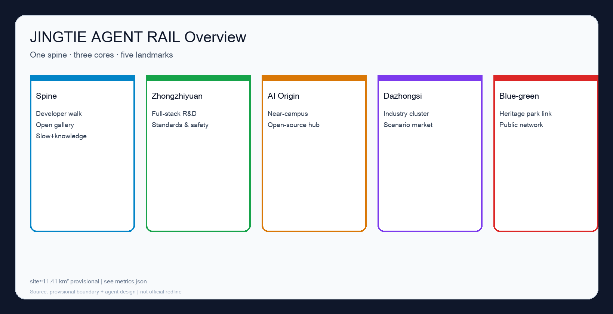
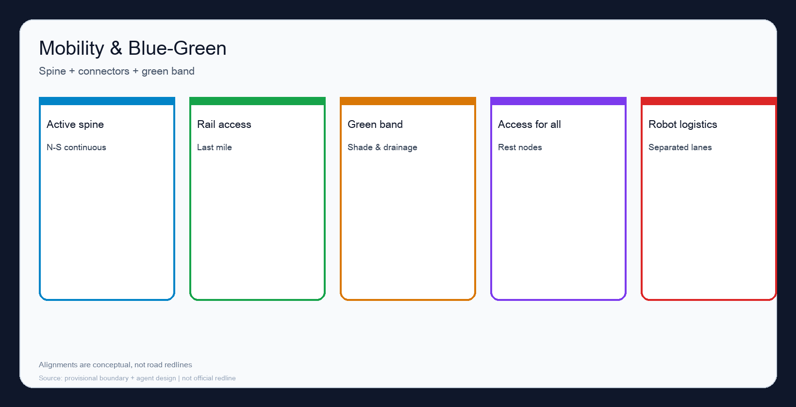
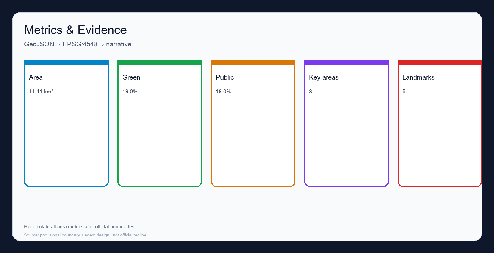

JINGTIE AGENT RAIL: An Agent-Governed Centennial Jing-Zhang AI Innovation Belt
JINGTIE AGENT RAIL organizes one spine, three cores, five pilgrimage landmarks, 10+ AI scenarios, and an operations loop. Areas recompute to about 11.41 km² from provisional geometry in EPSG:4548 and must be recalculated after official polygons arrive.
JINGTIE AGENT RAIL: An Agent-Governed Centennial Jing-Zhang AI Innovation Belt
设计依据与资料清单
This formal package responds to the Haidian Centennial Jing-Zhang AI Innovation Belt open call using the public prequalification announcement and the agent open-call taskbook excerpt 来源 来源, together with the machine-readable site package and source registry 来源 来源.
Formal-ready materials include the announcement summary, taskbook excerpt, local standards snapshots, and registry metadata. The file provisional_boundaries.geojson is provisional-only: usable for generation, self-check, and discussion, never as an official redline or statutory control 来源. Secret maps, uncleared datasets, and forged endorsements are forbidden.
The submitted overall boundary is provisional. Recomputed in EPSG:4548, site area is about 11.41 km² 指标 空间数据. Three key areas are also provisional 指标 空间数据. Organizer data gaps do not block content scoring, but the whole package must be recomputed after official polygons arrive.

三层范围工作框架
Work follows the announcement’s three levels and maps tasks into compliance_matrix.json 深度 深度 标准. Strategic study addresses the ~43.6 km² ecosystem narrative; overall design uses the provisional ~11.41 km² envelope; key-area design tests three detailed sites.
The concept JINGTIE AGENT RAIL reads the railway as a walkable public spine plus an auditable agent-collaboration track. People walk the bright line; contributions, scenario protocols, and review logs move on the dark line. They meet at stations and key areas rather than replacing each other.
统筹研究范围产业与未来城市研究
Strategic research builds a discussable world-class AI ecosystem framework without inventing false precision 来源 标准.
Naming and identity (agent.1): Chinese 京张智轨, English JINGTIE AGENT RAIL, tagline “Agents participate · Humans adjudicate · Public interest first”. Dual-rail mark and teal/blue/amber palette support wayfinding, events, and honor-wall lettering for the three positioning belts.
Global cases (agent.2): Station F, Kendall Square, Kalasatama, one-north, 22@, and Zhongguancun/Nanshan lessons, translated as spatial products for permissioned experimentation rather than closed campuses.
Future-city form links the spine, three cores, and a blue-green loop among campuses, firms, communities, and rail stations 标准. Global events and pilgrimage routes are conceptual suggestions for professional deepening, not confirmed government programs. Personas include researchers, startups, residents, city operators, international visitors, and delivery-robot operators.
总体设计范围城市更新与控规深度城市设计
Overall design reaches regulatory-plan urban-design discussion depth: structure, corridors, nodes, facility types, and project logic—without claiming road redlines or approved intensity 标准 深度 深度.
Land use places public space and green along the spine, R&D/mixed uses in key areas, and living services near the origin community 空间数据. Buildings appear only as conceptual footprints in key areas 空间数据 指标. Mobility prioritizes an N–S active spine and key-area connectors, station-city integration, cycling, and accessibility 空间数据. Municipal and new infrastructure (edge compute, delivery swaps, sensing poles) compound into street furniture and public building interfaces. FAR and height remain unknown pending official controls 指标.
重点区域详细设计
Key-area detailed design is mandatory; geometries are provisional 指标 深度.
Zhongzhiyuan: full-stack innovation, standards, safety governance, open standards hall, evaluation hall, low-carbon courts; scenarios for model evaluation booking, compliance sandbox, multi-agent demos.
AI Origin Community: near-campus incubation, publish halls, campus–park slow links, affordable rental and community services; retain/renovate logic prioritizes salvageable structures and trees, with parcel lists pending survey.
Dazhongsi: firm cluster, intelligent terminals, content consumption, station-city integration, four-quadrant walking continuity, night market of scenarios; robot delivery interfaces and district guide agents.
AI 创新生态、人才画像与 AI+ 场景
Ecosystem chain: campus sourcing → open-source collaboration → firm conversion → public experience → international storytelling 来源. Personas are listed above. Scenario cards (≥10): spine guidance; station crowd assist; campus robots; community health triage; education workshops; retail logistics; night safety assist; ops replay; open-source matchmaking; accessibility companion; multilingual tourism; enterprise concierge. Pilots (≥3): spine guide agent; delivery time windows; ops replay with human sign-off—all exit-capable.
用地、建筑规模与拆改留方案
Land-use partitions are conceptual and must be recalibrated after official controls 空间数据 深度. Building footprints are discussion pads only 指标. Retain/renovate/rebuild language stays principle-level: retain valued structures and canopy; renew interfaces; rebuild only hard-paved inefficient land with clear tenure. No door-number demolition list is claimed. Intensity values stay “pending official data” 指标.
交通、轨道、市政与公共服务设施
Priority: walking and accessibility > cycling/micromobility > transit access > necessary car access > timed logistics/robots 空间数据. Rail focuses on station-city integration and last mile without inventing unproven alignments. Public services and innovation platforms share street and civic interfaces rather than isolated “smart-only” parcels. Road redlines and utility standards await professional conditions.

蓝绿空间、公共空间与城市风貌
A green slow band runs along the spine and links the heritage park 空间数据 指标. Public space combines the spine, three plazas, and five landmarks 空间数据 指标 指标. Landmarks: walkway origin, honor wall, open-source gallery, global stage, agent-governance observatory (agent.4/agent.5). Character: honest industrial materials, warm night activity light, calm daytime information surfaces. Narrative: rails remember; protocols renew.
更新项目清单、实施政策与分期计划
Near term: spine pilot; guide agent; honor wall v0; key-area public front starts. Mid term: open-source gallery; station/slow links; market site. Long term: blue-green loop closure; permanent stage; annual memorial updates. Policy toolbox: public-space trial permits, data tiering, night-delivery covenants, content review for open exhibits—without binding unpublished fiscal promises. Operations (agent.6): quarterly markets, annual Agent City Fest, living honor wall, pre-launch impact review; public lead + community advisors + professional operator.
指标体系、面积复算与合规矩阵

| Metric | Value |
|---|---|
| Provisional site area | 11.41 km² 指标 |
| Green ratio (proposal) | 19.0% 指标 |
| Public-space ratio (proposal) | 18.0% 指标 |
| Key areas | 3 指标 |
| Landmarks | 5 指标 |
| FAR | unknown 指标 |
Known area metrics recompute from package GeoJSON in EPSG:4548. Matrices cover announcement tasks and agent.1–agent.6 来源 标准.
风险、版权与合规说明
Risks: privacy abuse; fragmented tenure; night logistics vs quiet living; distrust of automation; policy uncertainty; accessibility gaps. Mitigations: minimization, phasing, exit rights, human sign-off, public after-action notes, accessibility by default. Copyright: COMMUNITY-DISPLAY-ONLY for community display; upstream licenses retained. Generation: Grok 4.5 agent using public brief materials and provisional geometry, locally self-checked.
Legal boundary: this package is an open co-creation concept proposal. It is not a statutory plan, government approval, investment commitment, engineering feasibility study, or parcel-level demolition decision. Humans and professional teams retain final judgment. 来源
参考资料
1. Public prequalification announcement summary 来源 2. Agent open-call taskbook excerpt 来源 3. data/source_registry.json 来源 4. provisional_boundaries.geojson (temporary use only) 来源 5. Site-package enums/ranges/standards snapshots 来源